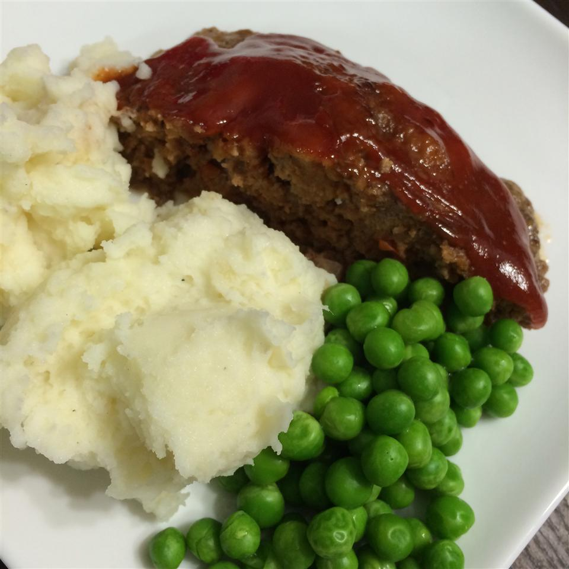

Meatloaf

Description
Fresh snow turned ice cream in 5 minutes or less! Fun to do with kids. The toppings/mix-in options are endless. Fresh fruit is a great mix in for snow cream, as well as chocolate chips.
Ingredients
- 2 pounds lean ground beef
- 1/2 cup crushed saltine crackers
- 1 (8 ounce) can tomato sauce
- 2 eggs, beaten
- 1/4 cup finely chopped onion
- 2 tablespoons finely chopped green bell pepper
- 1 teaspoon salt
- 1/4 teaspoon ground thyme
- 1/4 teaspoon ground marjoram
- 1/4 cup ketchup
- 2 tablespoons light corn syrup
Steps
- Preheat an oven to 350 degrees F (175 degrees C).
- Combine ground beef, cracker crumbs, tomato sauce, eggs, onion, bell pepper, salt, thyme, and marjoram in a large bowl and mix well. Shape beef mixture into two equally sized loaves. Place both loaves in a 9x13 inch baking dish. Cover with foil and bake in the preheated oven for 1 hour. Meanwhile, mix ketchup and corn syrup in a small bowl to make a glaze.
- Remove baking dish from the oven and remove foil. Brush glaze onto the loaves. Return baking dish to the oven uncovered, and continue baking until loaves are no longer pink in the center, 15 to 20 minutes. An instant-read thermometer inserted into the center should read at least 160 degrees F (70 degrees C).